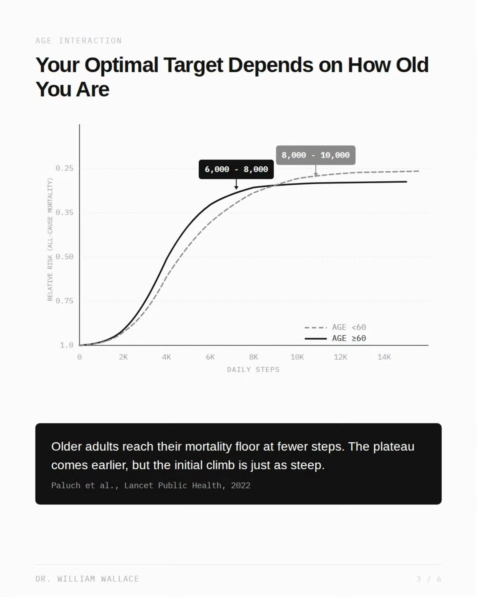
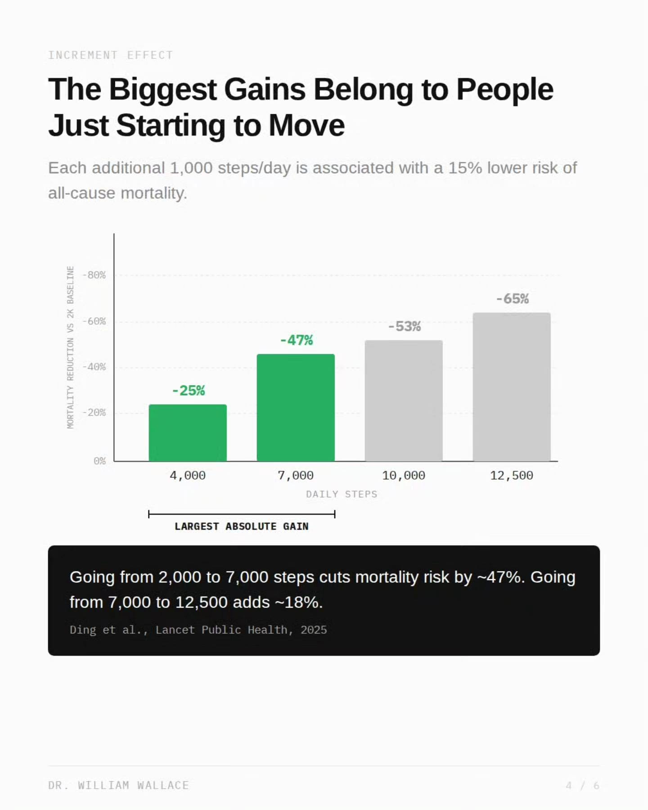
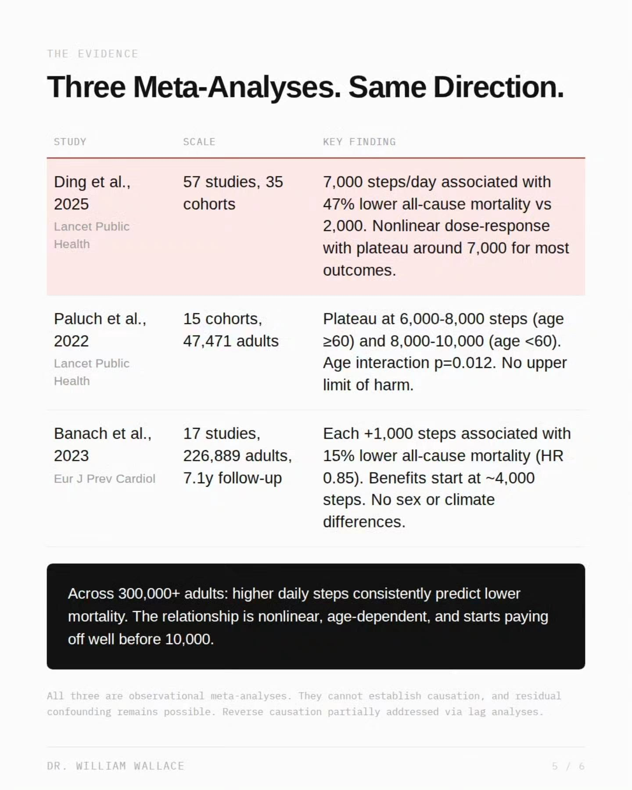

Most of the mortality benefits of walking happen below 7000 steps.
It doesn’t take much to see a huge payoff.
Louis highlights that big mortality reductions appear at lower step counts than expected, especially for sedentary people.
Most of the mortality benefits of walking happen below 7000 steps.
It doesn’t take much to see a huge payoff.
The mortality-risk-reduction benefits of walking start lower than you think, and that's probably a good thing (especially if you are starting from "sedentary")



Louis points to prior posts collating randomized trials showing plaque regression with statins, ezetimibe, PCSK9 inhibitors, colchicine and high-dose EPA. Tags reference trials such as ASTEROID, GLAGOV, PACMAN-AMI, EVAPORATE and LODESTAR. The post itself is mainly a pointer to those earlier posts.

A year-long study found adults walking 40 minutes three times weekly had hippocampal growth, while stretching-only participants lost about 1-2% of hippocampal volume.

Louis shares a 2023 meta-analysis of 17 studies and 226,889 adults: benefits begin around 4,000 steps with no plateau up to 20,000.

William Wallace explains that sitting after eating relies on insulin signaling, while moving activates GLUT4 transporters through muscle contraction, so glucose enters muscle faster with lower peaks and less pancreatic demand. Louis shares it as a rationale for post-meal walking.

Louis shares Dean Ornish's advice that consistent daily movement like walking lowers blood pressure, improves insulin sensitivity and reduces inflammation.

A study of 5,416 US women aged 63-97 without prior heart disease, using accelerometers, links more time spent on housework, gardening, cooking and self-care with lower cardiovascular risk. Louis notes that reverse causality is likely but that avoiding sedentary time probably lowers risk.